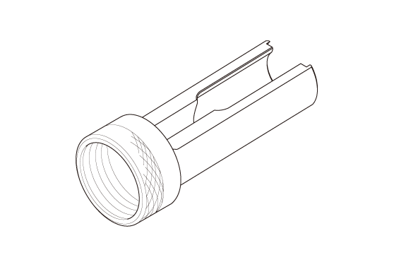
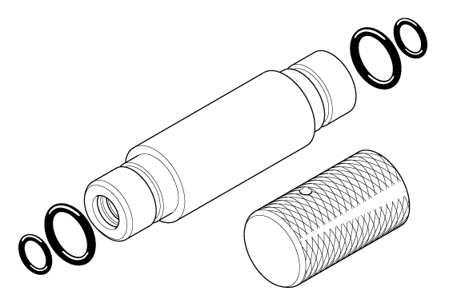

LEMON Manuals
: Even more car manuals for everyone: 1960-2025
Home
>>
Honda
>>
2016
>>
Civic LX, 4D Sedan, Automatic CVT Trans
>>
Repair and Diagnosis (Single Page)
>>
Engine Mechanical
>>
Fuel System
>>
Engine Control / Engine Mechanical - Service Information
>>
Removal and Installation
>>
Valve, Spring, and Valve Seal Removal and Installation (L15B7)
>>
Notes
Valve, Spring, and Valve Seal Removal and Installation (L15B7): Notes
Special Tools Required
Image
Description/Tool Number

Courtesy of HONDA, U.S.A., INC.
Valve Spring Compressor Attachment 070AE-5K0A100

Courtesy of HONDA, U.S.A., INC.
Stem Seal Driver 07PAD-0010000